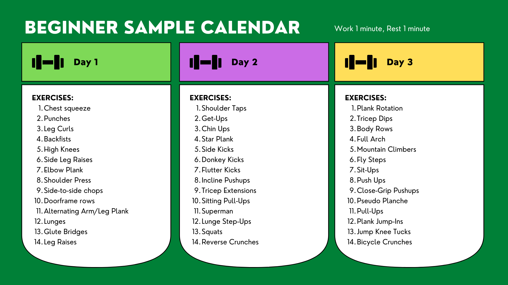

As a beginner, I encourage you to commit 30 minutes-1 hour for 3 days a week. You can choose whichever 3 days that work for your schedule. Each day you work out, you want to incorporate exercises from each column of muscle groups. I suggest completing all exercises in 2 consecutive rows to make it easy on you. For each exercise, you work for 1 minute and rest for 1 minute.
A sample schedule is provided for you below.

Beginner Sample Calendar
| Day 1 |
Day 2 |
Day 3 |
| Chest squeeze |
Shoulder taps |
Plank rotation |
| Punches |
Get-Ups |
Tricep dips |
| Leg curls |
Chin ups |
Body rows |
| Back fists |
Star plank |
Full arch |
| High knees |
Side kicks |
Mountain climbers |
| Side leg raises |
Donkey kicks |
Fly steps |
| Elbow plank |
Flutter kicks |
Sit-ups |
| Shoulder press |
Incline pushups |
Push ups |
| Side-to-side chops |
Tricep extensions |
Close-grip pushups |
| Doorframe rows |
Sitting pull-ups |
Pseudo planche |
| Alternating arm/leg plank |
Superman |
Pull-ups |
| Lunges |
Lunge Step-Ups |
Plank jump-ins |
| Glute bridges |
Squats |
Jump knee tucks |
| Leg raises |
Reverse crunches |
Bicycle crunches |
To increase the intensity of the workout, increase the work time or decrease the rest time. To decrease the intensity of the workout, decrease the work time or increase the rest time. If you want to increase both, I suggest you move to the Intermediate page!
Remember that it's okay to not be perfect in your first few workouts. We all get tired and have a lot that runs through our minds while we work out. Stay focused, finish out the exercise, and improve your technique every rep.